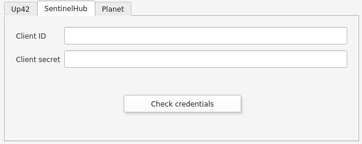
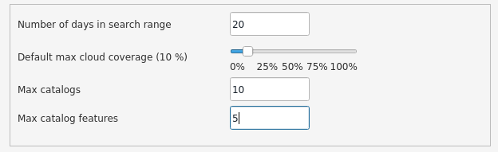
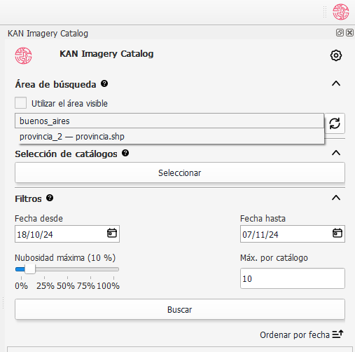
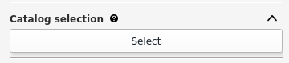
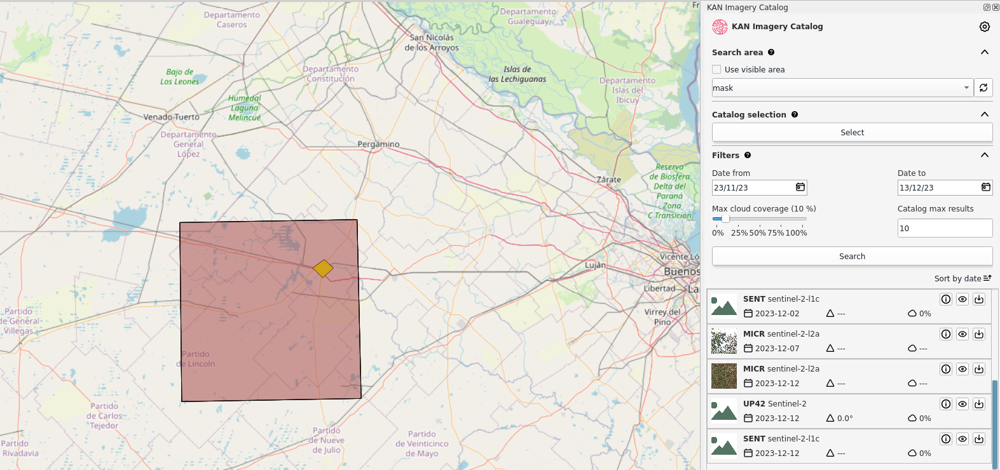
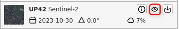

Complemento
Cuando abra el plugin Kan Imagery Catalog, aparecerá en el lado derecho de la pantalla de QGIS con las siguientes secciones:

- Configuración
- Área de búsqueda
- Selección de catálogo
- Filtros
- Listado
Configuración
Para utilizar el plugin Kan Imagery Catalog, lo primero que debe hacer es configurar las credenciales que se usarán para conectarse a diferentes proveedores de imágenes.
Credenciales UP42
En este punto, procederemos a configurar las credenciales para UP42. Para continuar, necesita un nombre de usuario y una contraseña en la plataforma del proveedor. Para registrarse, puede visitar https://console.up42.com/log-in.
Una vez que haya habilitado su usuario y cargado el primer proyecto, podrá acceder a la información requerida por el plugin para utilizarlo.

El plugin solicita la siguiente información para conectarse al proveedor:
- Nombre de usuario
- Contraseña
Note
Puede encontrar esta información en el portal de UP42 > Proyectos > Desarrolladores.
Después de cargar los datos necesarios, puede verificar las credenciales.

Si son válidas, verá el mensaje "Las credenciales son válidas."
Credenciales Sentinel Hub
En este punto, procederemos a configurar las credenciales para Sentinel Hub. Para continuar, necesita un nombre de usuario y una contraseña en la plataforma del proveedor. Para registrarse, puede visitar las configuraciones de cuenta de sentinel-hub.
Una vez que haya habilitado su usuario, debe registrar un Cliente OAuth en las configuraciones de su cuenta para acceder a la información requerida por el plugin para utilizarlo.

El plugin solicita la siguiente información para conectarse al proveedor:
- Client ID
- Client secret
Tip
Siga la documentación de sentinel-hub.
Después de cargar los datos necesarios, puede verificar las credenciales.

Si son válidas, verá el mensaje "Las credenciales son válidas."
Credenciales Microsoft
El catálogo de datos de Microsoft Planetary Computer es de libre acceso, por lo tanto, ya está incorporado en el plugin y no es necesario ingresar credenciales.
Credenciales Planet
Próximamente
Parámetros generales
Además de cargar credenciales, el usuario puede configurar los siguientes parámetros:
- Número de Días de Consulta
- Cobertura de Nubes Máxima Predeterminada: Puede variar entre 0 y 100%.
- Número Máximo de Catálogos
- Número Máximo de Objetos por Catálogo

Una vez configurados los parámetros generales, aplique los cambios haciendo clic en Aceptar.
Área de búsqueda
Con el área de búsqueda, el usuario puede definir el cuadro delimitador donde el plugin buscará la disponibilidad de imágenes.
Puede usar la extensión de lo que está visible actualmente en QGIS seleccionando "Usar el área visible en pantalla", o elegir una capa de geometría de polígono que esté siendo utilizada en el proyecto actual de QGIS.
Si se selecciona la opción "Usar el área visible en pantalla", el plugin reconocerá el área visible en el lienzo como el área de búsqueda.

Para usar el área de una capa vectorial, esta debe estar cargada en el proyecto. El usuario debe deseleccionar "Usar el área visible en pantalla", lo cual mostrará una lista de capas disponibles.

Tip
Al utilizar una capa vectorial como área de búsqueda, se recomienda EPSG 4326.
Note
En el caso de capas vectoriales de multipolígono, si se selecciona un objeto espacial, el plugin lo reconocerá como área de búsqueda. De lo contrario, el plugin seleccionará aleatoriamente un objeto espacial de la capa para definir el área de búsqueda.
Selección de catálogo
En esta sección, el usuario puede seleccionar los catálogos y colecciones que desea consultar.

En el campo de búsqueda por nombre o descripción, el usuario puede filtrar por el valor que ingrese. Si se deja en blanco y se filtra, se listarán todos los catálogos de los proveedores consultados. Por ejemplo, si ingresa "Sentinel" en el campo de búsqueda y filtra:

Al seleccionar el catálogo en la primera ventana y hacer clic en "Agregar Seleccionados", las colecciones se moverán a la segunda ventana. Para continuar con estas preferencias, haga clic en OK.

Eliminar catálogos y colecciones
Si el usuario desea excluir las colecciones que había configurado previamente, debe reabrir la ventana de Selección de Catálogos, seleccionar las "Colecciones Seleccionadas" y eliminarlas antes de hacer clic en OK para guardar los cambios.

Filtros
Antes de buscar colecciones, puede establecer varios criterios de búsqueda complementarios:
- Fecha de inicio
- Fecha de finalización
- Cobertura de nubes
- Límite de registro

Fecha de inicio y fecha de finalización
En este caso, puede especificar el rango de fechas que el plugin usará para buscar imágenes. Por defecto, el plugin busca imágenes desde 7 (siete) días antes de la fecha de consulta.

Cobertura de nubes
Puede determinar el porcentaje máximo de cobertura de nubes que deben tener las colecciones filtradas.
Límite de registro
Puede establecer un límite máximo en el número de registros para las colecciones que busca. El plugin está configurado con un máximo de 10 registros por defecto, pero el usuario puede modificarlo según desee.
Búsqueda y listado
Una vez que haya definido el área de búsqueda, los catálogos, las colecciones y los filtros, puede proceder con la búsqueda.

Los resultados de la búsqueda mostrarán un máximo de 10 (diez) registros, como se establece en los Filtros.

Los resultados se pueden ordenar en orden ascendente o descendente según la fecha de adquisición.
Si ha seleccionado usar un polígono como área de búsqueda, antes de iniciar la búsqueda debe haber seleccionado la entidad previamente.

Funciones de resultados
Encontrarás tres funciones:
- Información
- Vista rápida
- Descargar
Información
El icono "i" se refiere a la información general de la colección seleccionada.

Se abrirá una ventana con información adicional.

Vista rápida
Usando el botón con el icono de ojo, el usuario puede ver rápidamente la imagen seleccionada. La vista rápida incluye un footprint (cobertura de imagen) y una vista previa del raster.


Descargar
Usando el botón de descarga, se le envía directamente al catálogo del proveedor para descargar la imagen seleccionada.